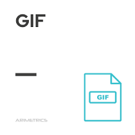
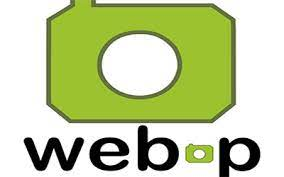

JPG
JPG es un formato de archivo de imagenes o fotografías muy popular en el entorno digital.
El significado de las siglas JPG es Joint Photographic Experts Group, un equipo de
expertos que inventó este formato en 1992 con el objetivo de crear un formato comprimido
de imagen para fotografías
PNG
El formato de archivo PNG generalmente se usa en los sitios web para mostrar
imágenes digitales de alta calidad. Se creó para superar en rendimiento al
archivo GIF y no solo ofrece una compresión sin pérdida de datos, sino también una paleta
de colores mucho más variada y brillante

GIF
Un GIF es un formato de intercambio de imágenes que significa Graphic Interchange Format y
gana popularidad gracias a que es uno de los archivos más compartidos en la red
social tumblr. se trata en el movimiento de uno o varios fotogramas alrededor de
3-5 segundos de duración y que se repite de manera infinita

WEBP
La extensión de imagen WebP te permitirá ver imágenes WebP en el Explorador de Microsoft
Edge de Windows 10. WebP es un formato de imagen moderna que proporciona compresión con
y sin pérdida de información para las imágenes más pequeñas y enriquecidas en la web

SVG
SVG o Gráficos Vectoriales Escalables es un estándar web para definir gráficos basados
en vectores en páginas web. Basado en XML, el estándar SVG proporciona marcado para
describir rutas, formas y texto dentro de una ventana gráfica.